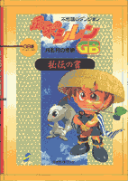
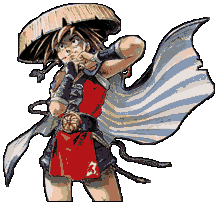
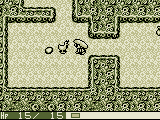
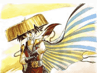
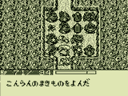
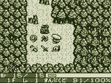
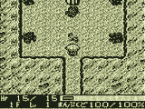

������������������作者：不明
������������������ ��编辑：kenyo
“风来的西林”真可说是GB玩家必备的佳作，中村光一领导的CHUNSOFT在不同主机上推出的一系列游戏无一不是精品。今回，我们将以“风来的西林GB”为突破，详细介绍该游戏的操作技巧，并以问答的形式将难题解答，同时附上重点流程，展现浪人西林GB真我的风采。
情节简介
这一次，浪人西林随着同伴コッバ来到了月影村。沿途中发现不少惊慌逃跑的村民，而不久连同
伴也失踪了。从村长处得知此处有一个迷一般的怪物オロチ。每年它都要来村里抓走一名村民，
今年轮到了少女フミ。村民虽悲愤之极，但迫于怪物的强大力量而不敢反抗。此时少年ナギ挺身而出，只身前往魔窟营救フミ，但不幸也落入魔掌。在村民的央求下，西林决定前往怪物所在的
巢穴营救フミ、ナギ还有同伴コッバ。并除去这个作恶多端的怪物。责任重大，他能否成功完成任务就看玩家你的身手了。
迷宫内的冒险基本上可分为三次：
第一次是至第10层救出少年ナギ，
第二次至“龙之颚”救回コッバ，
第三次则进入“龙之颚”至顶层“魔窟”打倒コッバ救出フミ。
操作篇
一、标题画面
にっきをつくる 写日记
若为新日记则后面的依次操作为取名，默认值为西林シレン。
选择游戏难度：やさしぃ简单、ふつう中等、むすかしぃ困难
若为旧日记则选择ふうらぃにっき（风来的日记）1～3，即三档记录。
にっきをぅつす 日记拷贝
にっきをけす 消除日记
ほうけんにする 继续冒险
なまえをかえる 更换姓名
かいそう 回顾日记的最后一段
ばんづけ/バスワ―ド排行榜/密码
注：密码在通关后可取得，用于参加CHUNSOFT的活动，对国内玩家恐怕无用，而且也早已过期
了！
フェイのもんだい（共100题）菲的问题
开动脑筋，解决难题，你能达成多少呢？
二、基本操作法：
十字键：主人公的移动，道具的选择
选择键（SELECT）：在迷宫内有效，看地图，但只显示已探索区域
START键：按一下，而后用十字键选择攻击方向
A键：攻击，决定道具的使用
B键：调出指令栏，取消上次操作
十字键+B键：快速移动
十字键+START键：抄近道，在怪物包围前尽快脱出房间
A键+B键：快速恢复体力，但仍计算回合数，消耗满腹度
A键+SELECT键：发射弓箭（先装备后使用）
三、指令栏及主人公状态表示
おかね金钱
とうたっちてん 到达地点（上次冒险）
けんのつよさ 剑的强度（已装备的）
たてのつよさ 盾的强度（已装备的）
ちから 力量，表现为攻击的效果
けいけんち 经验值（离下次等级）
HP 体力
レベル 水平（每次上升都会增加hp）
まんぷくど 满腹度（每10回合减1%）
どうぐ 道具（用START键可整理道具）：
ふる、のむ、よむ、うつ、いれる，都可解作“使用道具”，只不过针对不同类型的道具的使用
的不同称呼。
そうび 装备（共武器，盾，弓箭，腕轮四大类）
みる 看，针对つぼ（壶）使用，即检查壶内道具
なげる 投掷道具，针对不同道具，效果不一，详见后文
おく 放下道具，相对于投掷文明多了，且不损坏道具
せつめい 道具效果说明，对未识别的道具无效
なまえ 为未识别的道具取名
注：装备类道具可能有三种标记：骷髅：受诅咒，一旦装备很难卸下；
E：已装备；*：效果不明，装备后才显示。
あしもと脚下
当道具档已满及其它情况下，位于道具所处位置上时可使用：ひろう 捡起 こうかん 与身上道具相交换，其余同前
おわる 中断（结束此次冒险）
四、迷宫内各要素
墙壁：投掷物、弓箭、法术无法通过
泉水：投掷物、弓箭、法术可飞跃其上
机关（ワナ）：各种用来阻止西林的陷阱，可分为四大类：
a：直接损伤体力类：地雷、毒箭（力量下降）、落石
b：限制行动类：活动地板（掉入下一层）、夹板（不能移动）等
c：使道具发生变化类：大水（盾-1），尿（饭团子变馊）等
d：其它类：有解除装备，报警等
阶梯：前往下一层，地图上显示为方框
主人公：地图上为黑点
敌：地图上为圆圈
道具：地图上为十字标记，共分为九大类，即：剑、盾、腕轮、弓箭、药草、书卷、手权、壶、饭团子
商店：在选择中等或困难，难度后于迷宫内出现，但并非每回都能碰上，所出售道具也不确定，要是运气好，可有不少收获。
五、月影村
月影村前后共七间建筑物，分别为：
村长的家：位于村东北角，西林就是从着得知少女フミ被怪物オロチ抓走的消息。
フミ的家：位于村东南角，现在家里只剩下可怜的老父亲，去安慰一下吧。
鸣叫龙神社：从村中的阶梯到达，是神主的住所，在游戏的开始若不知道如何操作，他回教你，也是情节发展的一个重要地点。
食宿处：村西北角，クヨウ山卡入口处。在故事发展中村民为你建造，用来存放冒险结束带回的道具。
六、人物简介
フミ：月影村的少女，故事就是围绕如何营救她而开展的。
ナギ：村长的孙子，也是フミ的好伙伴。
コッバ：西林的同伴，一只会讲人话的神奇动物。
ケャキ：西林在月影村结识的温柔姑娘。
ヨシゾウタ也是个旅行者，给西林不少帮助，似乎是个乐师。
バシリのゴン：鸣叫龙神社的伙计，一些闲杂的事都由他处理（也就是个扫地的）。
龙神社的老大：鸣叫龙神社主持，年纪相当大，一些闲杂的事都由他处理（也就是个扫地的）。
冒险指南
以下均为冒险前必须知道的要点，仔细听着在座的各位：
◆每次出发，主人公的LV都只有1，所以不必刻意追求高级别。
◆每次进入迷宫，即使是同一次，各层的形状都会改变，所以还是尽量探查所有的道路吧。
◆迷宫内各层的任务，说到底基本上只是找到楼梯往上走（或往下走）但为了以后能从容应付强大的敌人还是多杀敌，找宝物为好。
◆迷宫内采用回合制（但也不是你拍一，我拍一，而是同时行动），无论是攻击、移动、使用道具都会计算回合，所以在决定下一步行动前先看一下周围敌人的动向。
◆快速移动中若经过道具，则只显示道具名称而不捡起，另外还可用来与同伴交换位置。
◆由于满腹度的设定，必须尽快找到饭团子，不然档满腹度降为0后，每一步行动都会损失体力。
浓缩精华的技巧篇
◆抄近道：由于回合制的设定，使得此点尤为重要，因为敌人全都如此，你若不抄近道，就会损失一回合，等于白挨一次攻击，若敌人数目多，即便你级别再高也会一下子丧命（除非你拥有高攻击力的，同时三方向攻击的剑，且体力充沛，二者缺一不可）
◆对付弓箭手的技巧：与敌保持两格距离（同一行或列），向垂直方向走两步，即可。
◆关于记录：此游戏记录的拷贝与其它不同，副本只能得到原本所处的情节，而不能得到位置，道具。即若在迷宫中中断，拷贝，副本只能从月影村出发，且道具全无。所以要想保持与原本一致，只能按照下列步骤：
（1）前提是仓库已建造完
（2）冒险结束，回村，将身上道具卸下放入仓库
（3）在村中记录
◆投掷道具。
（1）药草：此点至关重要。难度为困难时，营救出フミ后必须沿原路返回，要想让フミ一点也不受伤不太可能。当她受到攻击后，立刻将恢复体力的药草投向她，可使其恢复。其它同伴也同样。
（2）权：当使用次数为0时，将杖投掷出去也能得到同样效果。
（3）武器、防具：可将差劲的武器、防具投掷向敌人，效果同弓箭。
（4）壶：打碎壶，取出存放的道具。
◆购置道具：
以下介绍为偷取道具法，正派玩家可跳过此处：
（1）利用机关。若商店内有向下一层掉落的机关，可拿够道具后跳下，最安全。
（2）利用大部屋书卷。在该层使用，使成为一个大房间，此时店主会去守住楼梯，只能打倒他，不过切记，他绝对不弱。
（3）直接用魔法攻击，例如龙之炎，定身术等。
（4）利用盗贼。不过一般极难遇上盗贼，这时要用盗贼之壶（トドのつぼ）在商店内，对准墙投掷，会有盗贼从破裂的壶中跑出来，不过它会偷什么就不确定了。
◆机关。可用道具めぐすり探出，若无此道具，还有办法。用武器在空中挥舞，若攻击方向有机关就会显露出来，虽然会浪费不少回合，但起码你安全了许多。
◆未知道具的识别。可用识别的书卷来识别。
◆武器、防具的强化。如果只是强度的强化，只须调难度为简单，不断反复的冒险，在得到剑+1或盾+1后立即使用，而后平安返回即可。
◆合成。在得到合成壶（ごうせいのつぼ）后即可进行，将不同的武器放入，合成出的武器将以第一把放入的武器为名，附加攻击力为原先的总和，且同时具有各种武器的特殊能力。如将妖刀（ようとうかまいたち）+2与ミノタウロス斧（おの）+1放入，合成为妖刀+3，特殊能力为妖刀的三向攻击及ミノタウロス斧的会心一击。盾也同样。
另外，同种类杖合成后仍为原来那种，但使用次数为原来的总和。武器与盾合成为杖。
（注：1、存放于仓库中的壶内道具会丢失。2、救回コッバ后，要将难度该为中等以上（含中等）情节才会继续发展。3、每次出发前只能带一页（即5件）道具，多余的会丢失。）
在SFC版中，有一些协助玩家的人物登场，而GB版亦使如此。像SFC版的厨师和陶艺家等人，当玩家通过特殊事件后便会给予我方道具，带领西林进入新迷宫。这样的情节GB也有！
旅行的药商良增田就是其一。和西林似乎使因为在月影村碰上才变成朋友的。如果要谈到药的话，西林所冒险的世界确实有不少药草类的道具。看来只要亲切对待这个神秘男子，就能从他身上获赠药品。
菲的问题
这是比超任版“风来的西林”更具威力的“菲的问题”！问题是用迷题的形式目的是从各种不同的地形中，利用各种技巧到达往上楼梯。
问题一
西林的左边是巴可斯伊卷轴，在往左是米洛达洛斯、铁头、大螯等一群不管怎么看都都没有胜算的怪物们排成好几列。请考虑西林和怪物们的移动，如何才能到达左侧的楼梯呢？
要让怪物堵住下面的通道，
好好诱导他们让他们等着。
问题七
西林的左侧有目药草，喝了就上就可以看到下面的弹簧式陷阱。虽然楼梯被障碍物挡住了，但可以看到遥远的下方的大房间有一个卷轴……跳到弹簧上弹出小岛，读过大房间中的卷轴后，地形就会变平坦，
就可前往楼梯。
问题十一
在西林正下方的葛玛拉，有爱钱的特性。在画面下方有两只手杖，一支是驱除杖（1），另一支是变换地点的手杖。在往下有让人毫无胜算的大螯。手杖即使是（0）次再投中敌人也会产生效果。先离开葛玛拉，葛玛拉就会跑到金子上面，经过最短距离取得手杖，在通路途宫使用驱除杖，让大螯回到房间。然后站到葛玛拉的左边，将驱除杖投出，将葛玛拉吹向楼梯方向，再使用变换地点手杖。
问题十四
西林的右下方有高飞之草。而且在远处的左下方有混乱之卷轴。两个都可以用，但是要用哪一个呢？在右下方的一房间中，有攻击力高并拥有飞行道具的怪物。当然，以普通的方法进入是不可能有胜算的。
不需要高飞之草，只要取得混乱之卷轴，踏入右下的房间一步，马上读混乱之卷轴，前往楼梯。
问题二十一
使用西林左下方的龙之草可以一击把鬼面武者打倒。鬼面武者过 5回合后就会变成亡灵武者，使其它的怪物升级。左上角的儿童战车一旦等级提升，就会贯通墙壁开始射箭。亡灵武者的HP为5。以龙之草打倒鬼面武者，取得驱除杖之后，虚晃几下，等亡灵武者来到眼前时挥舞手杖。然后直接前往楼梯。
问题二十四
西林上方的道具，从左到右依次为目药草、海狮之盾、变换地点手杖（2）。在正右方的通路有一个陷阱，掉下去的话就准备等死吧。只要善用下方的驱除杖……依海狮之盾、目药草、变换地点手杖的顺序拿道具。装备海狮之盾，海狮盗贼快拿到目药草的时候，使用变换地点手杖回收目药草。之后，到下方的房间收驱除杖，把海狮盗贼吹向楼梯侧。最后向海狮盗贼挥动变换地点手杖往楼梯。
“西林”典义指南――确认流程和各层楼之间的相连状况
这一次西林的最终目的，就是打大蛇，平安无事的将被选择成为供品的月影村女孩子送回来。在此则为你介绍整个故事流程，及必须前往冒险的各个楼层。
1、在文子家与她母亲谈话
2、听取鸣き龙神社神主的建议
3、在村子的出口听取救出那基的情报
4、在迷宫的10层楼找到那基，并将那基平安无事的带回村里
5、在旅馆中与良增田对酌
6、向村长及位在神社中的パシリのゴン打听柯帕的下落
7、在龙之颚救出柯帕回到村（此时就算失败也并不需要重来）
8、在旅馆投宿，等待夜晚的到来
9、向村长打听龙之颚及村子的秘密
10、在村长家听取打龙之颚的办法
11、前往神社拿取香钱箱子中的卷物
12、前往村长家打听卷物的下落
13、良增田替你打开龙之颚
14、打倒大蛇
15、将文子平安无事带回村中
“西林”必备技巧篇――要成为一位流浪汉必须具备的技巧
在此为您列出要过关之前必须学会的基本技巧。只要你能学会，应该就可顺利的前进。
◆利用空挥先发制人：是否能先发制人则是十分重要的技巧。只要你在与怪物距离一格远时，先挥空一次的话，那么就可获得先发制人的机会。
◆小心的移动避开弓箭：如果你采用直线前进的方式接近会射出弓箭的ポウヤ―等怪物，会受到很大损伤。因此必须采用小心的斜向移动方式来接近，才不会被弓箭射中。
◆与敌人1对1战斗：如果你被敌人包围住，而必须依次与2只以上的怪物战斗，则战斗的效率会相当差。此时必须赶快逃向最近的通道。在此地由于可与怪物1对1
战斗，因此可将损伤减至最少。
◆斜向移动以节省时间：纵使是前往同一个地方，但光采用纵、横的移动及也使用斜向移动所花费的回合数会有相当大的差距。且由于所花的时间越久，饥饿度减少的越多，因此必须利用斜向移动。
要有效的利用道具所需的技巧
在本游戏中，如果说要玩家不使用冒险途中所落下的道具而过关，可说是完全的不可能。因此接下来为大家介绍更加有效的使用道具的技巧。

◆不必捡起道具即可使用：当你所拥有的道具并非全满时，走到道具之上即自动的加以拿取。但此时，如果你是在按住B键的状态下走上去，那么就会成为“站上去”的状态。这时如果使用あしもと的指令，那么除了一般的使用道具之外，更可将金钱丢出去攻击或者是把它放入保存之壶中。
◆将道具留下来的方法：虽然说道具在西林被打倒时就会消失，但如果你使用退き上げの卷物（只有装备者才会保留着）及仓库之壶的话，那么就可以保存在月影村的仓库之中。仓库在救出那基之后就可使用，而且会随着使用的次数增加而慢慢的有着两个阶段的加大。
将那基、文子、柯帕带回村里
在游戏中，玩家是一定要救出月影村的孩子们以及伙伴柯帕才行。而在此则告诉玩家要会在哪些地方才可见到他们。
◆柯帕的情况：柯帕就在爬上14楼楼梯上方以一点点的“龙之颚”等待着西林。只要柯帕加入成为伙伴的话，那么在回去的路上满腹度就不会减少。而且由于在回程时就算被打倒柯帕也会回到村中，而不必再度前往“龙之颚”等待他。
◆文子、那基的情况：那基在10楼，而文子则在大蛇的魔窟之中。但如果当西林跟着那基或文子所带着的那群小孩回去没被打倒的话，由于孩子们会回到原来的地方因此必须重来一次。
帮助玩家进行冒险的动物伙伴
SFC版有着会在冒险中帮忙的伙伴存在，而当然在gb版中也有十分值得依赖的伙伴登场。只是这次的伙伴并不是人，而是动物们，而在此就为你介绍它们所拥有的能力。
◆鸡：鸡在救出柯帕之后即可成为伙伴，是一位攻击力相当高而十分值得依赖的伙伴。而鸡有时所产下的鸡蛋除了可以提升满腹度30%之外好象也有各种不同的效果。
◆小猫タンモモ：一般而论最先成为伙伴的是小猫タンモモ。只要你回到村子3次以上之后前往神社，小榉就会为你介绍タンモモ，即可带上它一起进行冒险。但由于它有时候会搞错攻击对象，因此在后半段可说十分的麻烦。
◆与敌人1对1战斗：如果你被敌人包围住，而必须依次与2只以上的怪物战斗，则战斗的效率会相当差。此时必须赶快逃向最近的通道。在此地由于可与怪物1对1
战斗，因此可将损伤减至最少。
◆小狗ポチ：小狗ポチ同样也是在救出柯帕之后成为伙伴的动物。不管在攻击力、体力上，则都可说是最强的伙伴。而ポチ的特殊能力，则是它尿尿的地方，很容易长出像弟切草等不同的草类植物。只要你在它尿尿的地方等上5回合之后，草就会出现。至于会出现那种草则是随机选择。
协助玩家冒险的新角色出现！
对于倒在途中而回到旅店的玩家非常细心照顾的亲切姑娘。不过旅店的老板娘却说她“有一些地方颇奇怪的”。这到底是什么意思呢？要是前去和她攀谈、小榉便会时而带来一些道具。莫非这两个人将会谱出什么恋曲吗？
★别输给困境，找出自己的活路！
场面1：空腹又没有おにぎり的情况
就算装备再强，但如果没有食物而使满腹度变成零的话，最后还是会不支倒地。而当然只要装备上ハラヘラズの腕轮就可避免空腹，但取得的机会却相当少。因此在此为您解说一般情况下的处理方法。
◆吃草及鸡蛋来充饥：基本上，所有的草都可以当成药吃下去，并恢复5%的满腹度。而纵使是会产生不好影响的草，在不得已时也不得不拿来止饥。此外鸡蛋吃下去之后可恢复满腹度30%，它可由伙伴的鸡或商店获得。
◆阅读困ったときの卷物：当满腹度变成零之后，阅读困ったときの卷物即可恢复满腹度100%。但是如果有其它困扰的状况存在，则有时它会优先解决这些状况。因此在使用之前，先仔细确认好自己及周围的状况相当重要。
◆打倒特定的怪物：在7楼附近所出现的び―たん，只要打倒后就一定会留下おにぎり。而在10~12楼所出现的にぎり变化，则有时会使用将你未装备的道具变成大きいおにぎり的特殊攻击，在这些楼层中则可善加利用。
场面2：在无法前往的地方有道具存在
在游戏中偶尔会出现被水池所包围而无法进入的地形，而在这种地方设置有好几个道具及接关的情况也相当多。而此时只要玩家你依照一下所介绍的方法使用卷物、张杖或壶，那么就可取得此地的道具。
◆阅读大部屋の卷物：大部屋の卷物，该层楼就会变成一个大部屋并使水池消失。这样就可以前往原本无法通过的地点。在该处放置很多东西时使用则最好。
◆使用场所替えの杖：当无法前往的地方中有怪物存在时，只要挥动场所替えの杖就可以与怪物交换位置。而在捡完了道具之后，则在这种地方一定会安排有弹簧的陷阱将你弹回外面去。
◆按下トドの壶：当只有少数的道具存在时，这是工项相当有效的方法。那就是朝向对岸的道具按下トドの壶，如此便可确实的回收想要的道具。

场面3：在混乱状态下进行战斗的情况
只要你小心踏中回转的机关或是被混乱所丢中，那么就会在10回合中变成混乱状态。在混乱状态中则无法利用十字键向指定的方向移动及攻击，因此如果被敌人包围则十分危险。以下介绍其中3种应变方法。
◆射出弓箭攻击：虽然在混乱中无法依靠使用剑的一般攻击。但是纵使是在混乱状态中，弓箭还是可射往所指定的方向，而可确实的使敌人受到伤害，因此是十分不错的一种攻击方式。
◆丢出道具攻击：纵使在混乱状态中，玩家依然可以丢出道具向敌人进行攻击。至于丢什么好呢？则以会造成较大伤害的武器及道具最佳。而且依照其强度，威力越强所造成的损伤也就越大。
◆按下背中の壶：只要按下背中の壶，就可以瞬间恢复混乱状态。但是如果是附近有会丢出混乱草的敌人在的情况，则在打倒它之前不要恢复，以往有再度陷入混乱状态的危险。而最好先确认好情况之后，再来进行恢复。
场面4：房间成为怪物房间的情况
有时当你误角某些设置在房间中的机关之后，房间就会变成怪物房间。而纵使你是使用めぐすり草的话，也无法事先加以防范。
◆吃下无敌草进行战斗：吃下无敌草后，就在具有效果的20回合打倒周围的敌人，前往楼梯及通道。而虽然是无敌，但由于怪物房间内陷阱很多，要特别注意。
◆吃下高飞び草逃出：当你陷入危险的状态时，只要吃下高飞び草就可以转移倒同层楼中的某处，调整之后重新再来。
◆沿着通道且战且退：当附近有通道时，就可有效利用此方法。只要进入通道之后，就不会被敌人所包围，之后只要1步1步的后退，再打倒正面的敌人即可。
◆阅读卷物来应变：当附近有2个以上的敌人时，使用困ったときの卷物就可停止其动作。此外如果使用混乱の卷物、真空斩りの卷物或バクスイの卷物，则会分别有不同的效果产生。
“西林”江湖大盗篇
★偷商店的东西之后逃走
在迷宫中会有可以买卖道具的商店在迷宫中随机出现。在此虽然也有贩卖着拥有特殊效果的武器、防具及壶等物品，但价格则通常配合效果会相当高。因此虽然依照道理来说必须要购买才是正道，但有时候被手头所逼也必须要由商店中偷出东西才行。此时店主、警卫及警犬会跑来追捕你，不过你只要能走到楼梯前往另层楼的话，就可逃过追捕不被问罪。
◆利用トドの壶来完全犯罪：在此介绍成功率100%的犯罪。首先在店中找到所想要的道具。接着将这个道具放在店门口之胶的地方。然后再走出这个商店，由入口向店中使用トドの壶。如此一来就可在店主完全没有注意到的情况之下，顺利偷到所想偷的道具。不过，壶类的道具则无法利用此一方法偷取。
◆利用卷物及手杖：利用卷物及手杖所组合的犯罪成功率也相当高。首先请先拿起想要的道具，使用大部屋の卷物，店主就会移动到楼梯之上。然后再离店主6格远的地方向店主挥出场所替ぇの杖，再立刻爬上楼梯即可成功逃出。此外，如果在阅读了大部屋の卷物之后，使用身がわりの杖、吹き飞ばしの杖、金缚りの杖、一时しのぎの杖（当成敌人使用）也同样有效果。
◆利用つるはし：最为传统的一个方法。当商店与楼梯之间距离最近的，就可以利用つるはし挖掘出一条连接商店与楼梯之间的通路。当你偷了东西之后，就可以利用这条通道来逃走。
★其它偷东西的技巧
向成功率低的偷盗挑战的才是真正的高手。像利用高飞び草逃出商店及利用无敌草打倒追兵也是一种办法。别忘了，还可以将店主封在壶中呢！
“风来的西林GB版”有两种游戏模式。三种游戏难度在“店、怪物房间、道具名、怪物种类、道具种类”的设定上不同。而其中问题模式只要是让玩家熟悉操作上的练习以及道具的使用方法。GB版是保留了SFC版的要素的，而题目的数量却更多，更有益智性。
序盘问答题带路……
◆NO.1：在阅读“パクスイの卷物”时，时机是重点。阅读之后就可快速到达阶梯，且仍由充裕时间应付那些正在睡觉的怪物，所以一拿到马上就用……
◆NO.2：在有水池的地方可斜方向来前进。虽然在游戏时想以最短距离来前进，可是相对的，由于这会造成可看到的地方太少，因此却很难马上到达楼梯。
◆NO.3：丢掷道具可穿越水池。而弟切草对アンデシド系的怪物特别有效。
◆NO.4：即使是面对着水池，杖的威力仍可向一直线方向上的目标发挥其效果。所以当利用“场所替ぇの杖”时，就可轻松与对手交换位置。
◆NO.5：使用“吹き飞ばしの杖”时，可将对手击退至一直线上10格以后的距离。之后要以最短的距离向阶梯前进就没问题了。
◆NO.6：通常道具与陷阱绝不会在同一个地点。陷阱虽然平常看不到，但是若向有陷阱之格子进行攻击动作的话，则可以轻易发现，所以还是尽可能避开陷阱以最短距离来前进吧！
◆NOo.7：加入吃下眼药草的话，则一般看不见的陷阱便可一目了然。而“大部屋の卷物”可使楼层变成大房间，柱子水池也会消失。
◆NO.8：进入“やりすごしの壶”后玩家角色便会消失，而变成怪物来自由行动。
◆NO.9：水池的连角若有东西封锁起来，就可以安然的前进。对怪物使用“かなしばりの杖”后，直到我方攻击前它都不会攻击。
◆NO.10：对于移动速度每回合一格，而且会使用飞行道具的怪物，只要小心移动便可不受到攻击。见箭的有效距离是10格，杖则无限。